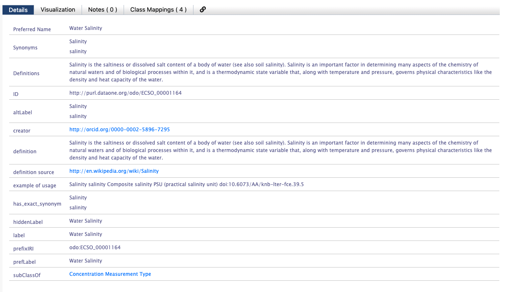

doc$dataset$title <- "New Title"4 Editing EML
This chapter is a practical tutorial for using R to read, edit, write, and validate EML documents. Much of the information here can also be found in the vignettes for the R packages used in this section (e.g. the EML package).
Most of the functions you will see in this chapter will use the arcticdatautils and EML packages.
Note
This chapter will be longest of all the sections! This is a reminder to take frequent breaks when completing this section.
4.1 Edit an EML element
There are multiple ways to edit an EML element.
4.1.1 Edit EML with strings
The most basic way to edit an EML element would be to navigate to the element and replace it with something else. Easy!
For example, to change the title one could use the following command:
If the element you are editing allows for multiple values, you can pass it a list of character strings. Since a dataset can have multiple titles, we can do this:
doc$dataset$title <- list("New Title", "Second New Title")However, this isn’t always the best method to edit the EML, particularly if the element has sub-elements.
4.1.2 Edit EML with the “EML” package
To edit a section where you are not 100% sure of the sub-elements, using the eml$elementName() helper functions from the EML package will pre-populate the options for you if you utilize the RStudio autocomplete functionality. The arguments in these functions show the available slots for any given EML element. For example, typing doc$dataset$abstract <- eml$abstract()<TAB> will show you that the abstract element can take either the section or para sub-elements.

doc$dataset$abstract <- eml$abstract(para = "A concise but thorough description of the who, what, where, when, why, and how of a dataset.")This inserts the abstract with a para element in our dataset, which we know from the EML schema is valid.
Note that the above is equivalent to the following generic construction:
doc$dataset$abstract <- list(para = "A concise but thorough description of the who, what, where, when, why, and how of a dataset.")The eml() family of functions provides the sub-elements as arguments, which is extremely helpful, but functionally all it is doing is creating a named list, which you can also do using the list function.
4.1.3 Edit EML with objects
A final way to edit an EML element would be to build a new object to replace the old object. To begin, you might create an object using an eml helper function. Let’s take keywords as an example. Sometimes keyword lists in a metadata record will come from different thesauruses, which you can then add in series (similar to the way we added multiple titles) to the element keywordSet.
We start by creating our first set of keywords and saving it to an object.
kw_list_1 <- eml$keywordSet(keywordThesaurus = "LTER controlled vocabulary",
keyword = list("bacteria", "carnivorous plants", "genetics", "thresholds"))Which returns:
$keyword
$keyword[[1]]
[1] "bacteria"
$keyword[[2]]
[1] "carnivorous plants"
$keyword[[3]]
[1] "genetics"
$keyword[[4]]
[1] "thresholds"
$keywordThesaurus
[1] "LTER controlled vocabulary"We create the second keyword list similarly:
kw_list_2 <- eml$keywordSet(keywordThesaurus = "LTER core area",
keyword = list("populations", "inorganic nutrients", "disturbance"))Finally, we can insert our two keyword lists into our EML document just like we did with the title example above, but rather than passing character strings into list(), we will pass our two keyword set objects.
doc$dataset$keywordSet <- list(kw_list_1, kw_list_2)
Note
Note that you must use the function list here and not the c() function. The reasons for this are complex, and due to some technical subtlety in R - but the gist of the issue is that the c() function can behave in unexpected ways with nested lists, and frequently will collapse the nesting into a single level, resulting in invalid EML.
4.2 FAIR data practices
The result of these function calls won’t show up on the webpage but they will add a publisher element to the dataset element and a system to all of the entities based on what the PID is. This will help make our metadata more FAIR (Findable, Accessible, Interoperable, Reusable).
These two functions come from the arcticatautils package, an R package we wrote to help with some very specific data processing tasks.
Add these function calls to all of your EML processing scripts.
library(arcticdatautils)
doc <- eml_add_publisher(doc)
doc <- eml_add_entity_system(doc)4.3 Edit attributeLists
Attributes are descriptions of variables, typically columns or column names in tabular data. Attributes are stored in an attributeList. When editing attributes in R, you need to create one to three objects:
- A data.frame of attributes
- A data.frame of custom units (if applicable)
The attributeList is an element within one of 4 different types of entity objects. An entity corresponds to a file, typically. Multiple entities (files) can exist within a dataset. The 4 different entity types are dataTable (most common for us), spatialVector, spatialRaster, and otherEntity
Please note that submitting attribute information through the website will store them in an otherEntity object by default. We prefer to store them in a dataTable object for tabular data or a spatialVector object for spatial data.
To edit or examine an existing attribute table already in an EML file, you can use the following commands, where i represents the index of the series element you are interested in. Note that if there is only one item in the series (ie there is only one dataTable), you should just call doc$dataset$dataTable, as in this case doc$dataset$dataTable[[1]] will return the first sub-element of the dataTable (the entityName)
# If they are stored in an otherEntity (submitted from the website by default)
attributeList <- EML::get_attributes(doc$dataset$otherEntity[[i]]$attributeList)
# Or if they are stored in a dataTable (usually created by a datateam member)
attributeList <- EML::get_attributes(doc$dataset$dataTable[[i]]$attributeList)
# Or if they are stored in a spatialVector (usually created by a datateam member)
attributeList <- EML::get_attributes(doc$dataset$spatialVector[[i]]$attributeList)
attributes <- attributeList$attributes
print(attributes)4.3.1 Edit attributes
Attribute information should be stored in a data.frame with the following columns:
- attributeName: The name of the attribute as listed in the csv. Required. e.g.: “c_temp”
- attributeLabel: A descriptive label that can be used to display the name of an attribute. It is not constrained by system limitations on length or special characters. Optional. e.g.: “Temperature (Celsius)”
- attributeDefinition: Longer description of the attribute, including the required context for interpreting the
attributeName. Required. e.g.: “The near shore water temperature in the upper inter-tidal zone, measured in degrees Celsius.” - measurementScale: One of: nominal, ordinal, dateTime, ratio, interval. Required.
- nominal: unordered categories or text. e.g.: (Male, Female) or (Yukon River, Kuskokwim River)
- ordinal: ordered categories. e.g.: Low, Medium, High
- dateTime: date or time values from the Gregorian calendar. e.g.: 01-01-2001
- ratio: measurement scale with a meaningful zero point in nature. Ratios are proportional to the measured variable. e.g.: 0 Kelvin represents a complete absence of heat. 200 Kelvin is half as hot as 400 Kelvin. 1.2 meters per second is twice as fast as 0.6 meters per second.
- interval: values from a scale with equidistant points, where the zero point is arbitrary. This is usually reserved for degrees Celsius or Fahrenheit, or latitude and longitude coordinates, or any other human-constructed scale. e.g.: there is still heat at 0° Celsius; 12° Celsius is NOT half as hot as 24° Celsius.
- domain: One of:
textDomain,enumeratedDomain,numericDomain,dateTime. Required.- textDomain: text that is free-form, or matches a pattern
- enumeratedDomain: text that belongs to a defined list of codes and definitions. e.g.: CASC = Cascade Lake, HEAR = Heart Lake
- dateTimeDomain:
dateTimeattributes - numericDomain: attributes that are numbers (either
ratioorinterval)
- formatString: Required for
dateTime, NA otherwise. Format string for dates, e.g. “DD/MM/YYYY”. - definition: Required for
textDomain, NA otherwise. Definition for attributes that are a character string, matches attribute definition in most cases. - unit: Required for
numericDomain, NA otherwise. Unit string. If the unit is not a standard unit, a warning will appear when you create the attribute list, saying that it has been forced into a custom unit. Use caution here to make sure the unit really needs to be a custom unit. A list of standard units can be found using:standardUnits <- EML::get_unitList()then runningView(standardUnits$units). - numberType: Required for
numericDomain, NA otherwise. Options arereal,natural,whole, andinteger.- real: positive and negative fractions and integers (…-1,-0.25,0,0.25,1…)
- natural: non-zero positive integers (1,2,3…)
- whole: positive integers and zero (0,1,2,3…)
- integer: positive and negative integers and zero (…-2,-1,0,1,2…)
- missingValueCode: Code for missing values (e.g.: ‘-999’, ‘NA’, ‘NaN’). NA otherwise. Note that an NA missing value code should be a string, ‘NA’, and numbers should also be strings, ‘-999.’
- missingValueCodeExplanation: Explanation for missing values, NA if no missing value code exists.
You can create attributes manually by typing them out in R following a workflow similar to the one below:
attributes <- data.frame(
attributeName = c('Date', 'Location', 'Region','Sample_No', 'Sample_vol',
'Salinity', 'Temperature', 'sampling_comments'),
attributeDefinition = c('Date sample was taken on',
'Location code representing location where sample was taken',
'Region where sample was taken', 'Sample number', 'Sample volume',
'Salinity of sample in PSU', 'Temperature of sample',
'comments about sampling process'),
measurementScale = c('dateTime', 'nominal','nominal', 'nominal', 'ratio',
'ratio', 'interval', 'nominal'),
domain = c('dateTimeDomain', 'enumeratedDomain','enumeratedDomain',
'textDomain', 'numericDomain', 'numericDomain',
'numericDomain', 'textDomain'),
formatString = c('MM-DD-YYYY', NA,NA,NA,NA,NA,NA,NA),
definition = c(NA,NA,NA,'Sample number', NA, NA, NA,
'comments about sampling process'),
unit = c(NA, NA, NA, NA,'milliliter', 'dimensionless', 'celsius', NA),
numberType = c(NA, NA, NA,NA, 'real', 'real', 'real', NA),
missingValueCode = c(NA, NA, NA,NA, NA, NA, NA, 'NA'),
missingValueCodeExplanation = c(NA, NA, NA,NA, NA, NA, NA,
'no sampling comments'))However, typing this out in R can be a major pain. Luckily, there’s a Shiny app that you can use to build attribute information. You can use the app to build attributes from a data file loaded into R (recommended as the app will auto-fill some fields for you) to edit an existing attribute table, or to create attributes from scratch. Use the following commands to create or modify attributes (these commands will launch a Shiny app in your web browser):
#first download the CSV in your data package from Exercise #2
data_pid <- selectMember(dp, name = "sysmeta@fileName", value = ".csv")
data <- read.csv(text=rawToChar(getObject(d1c_test@mn, data_pid)))# From data (recommended)
EML::shiny_attributes(data = data)
# From an existing attribute table
attributeList <- get_attributes(doc$dataset$dataTable[[i]]$attributeList)
EML::shiny_attributes(data = NULL, attributes = attributeList$attributes)
# From scratch
atts <- EML::shiny_attributes()Once you are done editing a table in the app, quit the app and the tables will be assigned to the atts variable as a list of data frames (one for attributes, factors, and units). Alternatively, each table can be to exported to a csv file by clicking the Download button.
If you downloaded the table, read the table back into your R session and assign it to a variable in your script (e.g. attributes <- data.frame(...)), or just use the variable that shiny_attributes returned.
For simple attribute corrections, datamgmt::edit_attribute() allows you to edit the slots of a single attribute within an attribute list. To use this function, pass an attribute through datamgmt::edit_attribute() and fill out the parameters you wish to edit/update. An example is provided below where we are changing attributeName, domain, and measurementScale in the first attribute of a dataset. After completing the edits, insert the new version of the attribute back into the EML document.
new_attribute <- datamgmt::edit_attribute(doc$dataset$dataTable[[1]]$attributeList$attribute[[1]],
attributeName = 'date_and_time',
domain = 'dateTimeDomain',
measurementScale = 'dateTime')
doc$dataset$dataTable[[1]]$attributeList$attribute[[1]] <- new_attribute4.3.2 Edit custom units
EML has a set list of units that can be added to an EML file. These can be seen by using the following code:
standardUnits <- EML::get_unitList()
View(standardUnits$units)Search the units list for your unit before attempting to create a custom unit. You can search part of the unit you can look up part of the unit ie meters in the table to see if there are any matches.
If you have units that are not in the standard EML unit list, you will need to build a custom unit list. A unit typically consists of the following fields:
- id: The
unit id(ids are camelCased) - unitType: The
unitType(runView(standardUnits$unitTypes)to see standardunitTypes) - parentSI: The
parentSIunit (e.g. for kilometerparentSI= “meter”) - multiplierToSI: Multiplier to the
parentSIunit (e.g. for kilometermultiplierToSI= 1000) - name: Unit abbreviation (e.g. for kilometer
name= “km”) - description: Text defining the unit (e.g. for kilometer
description= “1000 meters”)
To manually generate the custom units list, create a dataframe with the fields mentioned above. An example is provided below that can be used as a template:
custom_units <- data.frame(
id = c('siemensPerMeter', 'decibar'),
unitType = c('resistivity', 'pressure'),
parentSI = c('ohmMeter', 'pascal'),
multiplierToSI = c('1','10000'),
abbreviation = c('S/m','decibar'),
description = c('siemens per meter', 'decibar'))Using EML::get_unit_id for custom units will also generate valid EML unit ids. Custom units are then added to additionalMetadata using the following command:
unitlist <- set_unitList(custom_units, as_metadata = TRUE)
doc$additionalMetadata <- list(metadata = list(unitList = unitlist))4.3.3 Edit factors
For attributes that are enumeratedDomains, a table is needed with three columns: attributeName, code, and definition.
- attributeName should be the same as the
attributeNamewithin the attribute table and repeated for all codes belonging to a common attribute. - code should contain all unique values of the given
attributeNamethat exist within the actual data. - definition should contain a plain text definition that describes each code.
To build factors by hand, you use the named character vectors and then convert them to a data.frame as shown in the example below. In this example, there are two enumerated domains in the attribute list - “Location” and “Region”.
Location <- c(CASC = 'Cascade Lake', CHIK = 'Chikumunik Lake',
HEAR = 'Heart Lake', NISH = 'Nishlik Lake' )
Region <- c(W_MTN = 'West region, locations West of Eagle Mountain',
E_MTN = 'East region, locations East of Eagle Mountain')The definitions are then written into a data.frame using the names of the named character vectors and their definitions.
factors <- rbind(data.frame(attributeName = 'Location',
code = names(Location),
definition = unname(Location)),
data.frame(attributeName = 'Region', code = names(Region),
definition = unname(Region)))4.3.4 Finalize attributeList
Once you have built your attributes, factors, and custom units, you can add them to EML objects. Attributes and factors are combined to form an attributeList using the following command:
attributeList <- EML::set_attributes(attributes = attributes,
factors = factors) This attributeList must then be added to a dataTable.
Note
Remember to use: d1c_test <- dataone::D1Client("STAGING", "urn:node:mnTestARCTIC") d1c_test@mn
4.4 Set physical
To set the physical aspects of a data object, use the following commands to build a physical object from a data PID that exists in your package. Remember to set the member node to test.arcticdata.io!
Note
The word ‘physical’ derives from database systems, which distinguish the ‘logical’ model (e.g., what attributes are in a table, etc) from the physical model (how the data are written to a physical hard disk (basically, the serialization). so, we grouped metadata about the file (eg. dataformat, file size, file name) as written to disk in physical.
data_pid <- selectMember(dp, name = "sysmeta@fileName",
value = "your_file_name.csv")
physical <- arcticdatautils::pid_to_eml_physical(d1c@mn, data_pid)The physical must then be assigned to the data object.
Note that the above workflow only works if your data object already exists on the member node.
4.5 Edit dataTables
To edit a dataTable, first edit/create an attributeList and set the physical. Then create a new dataTable using the eml$dataTable() helper function as below:
dataTable <- eml$dataTable(entityName = "A descriptive name for the data (does not need to be the same as the data file)",
entityDescription = "A description of the data",
physical = physical,
attributeList = attributeList)The dataTable must then be added to the EML. How exactly you do this will depend on whether there are dataTable elements in your EML, and how many there are. To replace whatever dataTable elements already exist, you could write:
doc$dataset$dataTable <- dataTableIf there is only one dataTable in your dataset, the EML package will usually “unpack” these, so that it is not contained within a list of length 1 - this means that to add a second dataTable, you cannot use the syntax doc$dataset$dataTable[[2]], since when unpacked this will contain the entityDescription as opposed to pointing to the second in a series of dataTable elements. Confusing - I know. Not to fear though - this syntax will get you on your way, should you be trying to add a second dataTable.
doc$dataset$dataTable <- list(doc$dataset$dataTable, dataTable)If there is more than one dataTable in your dataset, you can return to the more straightforward construction of:
doc$dataset$dataTable[[i]] <- dataTable Where i is the index that you wish insert your dataTable into.
To add a list of dataTables to avoid the unpacking problem above you will need to create a list of dataTables
dts <- list() # create an empty list
for(i in seq_along(tables_you_need)){
# your code modifying/creating the dataTable here
dataTable <- eml$dataTable(entityName = dataTable$entityName,
entityDescription = dataTable$entityDescription,
physical = physical,
attributeList = attributeList)
dts[[i]] <- dataTable # add to the list
}After getting a list of dataTables, assign the resulting list to dataTable EML.
doc$dataset$dataTable <- dtsBy default, the online submission form adds all entities as otherEntity, even when most should probably be dataTable. You can use eml_otherEntity_to_dataTable to easily move items in otherEntity over to dataTable. Most tabular data or data that contain variables should be listed as a dataTable. Data that do not contain variables (eg: plain text readme files, pdfs, jpegs) should be listed as otherEntity.
eml_otherEntity_to_dataTable(doc,
1, # which otherEntities you want to convert, for multiple use - 1:5
validate_eml = F) # set this to False if the physical or attributes are not added4.6 Edit otherEntities
4.6.1 Remove otherEntities
To remove an otherEntity use the following command. This may be useful if a data object is originally listed as an otherEntity and then transferred to a dataTable.
doc$dataset$otherEntity[[i]] <- NULL4.6.2 Create otherEntities
If you need to create/update an otherEntity, make sure to publish or update your data object first (if it is not already on the DataONE MN). Then build your otherEntity.
otherEntity <- arcticdatautils::pid_to_eml_entity(mn, pkg$data[[i]])Alternatively, you can build the otherEntity of a data object not in your package by simply inputting the data PID.
otherEntity <- arcticdatautils::pid_to_eml_entity(mn, "your_data_pid", entityType = "otherEntity", entityName = "Entity Name", entityDescription = "Description about entity")The otherEntity must then be set to the EML, like so:
doc$dataset$otherEntity <- otherEntityIf you have more than one otherEntity object in the EML already, you can add the new one like this:
doc$dataset$otherEntity[[i]] <- otherEntityWhere i is set to the number of existing entities plus one. Remember the warning from the last section, however. If you only have one otherEntity, and you are trying to add another, you have to run:
doc$dataset$otherEntity <- list(otherEntity, doc$dataset$otherEntity)4.7 Semantic annotations
For a brief overview of what a semantic annotation is, and why we use them check out this video.
Even more information on how to add semantic annotations to EML 2.2.0 can be found here. Currently metacatUI does not support the editing of semantic annotations on the website so all changes will have to be done in R.
There are several elements in the EML 2.2.0 schema that can be annotated:
dataset- entity (eg:
otherEntityordataTable) attribute
On the datateam, we will only be adding annotations to attributes for now.
4.7.1 How annotations are used
This is a dataset that has semantic annotations included.
On the website you can see annotations in each of the attributes.

You can click on any one of them to search for more datasets with that same annotation.

4.7.1.1 Attribute-level annotations
To add annotations to the attributeList you will need information about the propertyURI and valueURI
Annotations are essentially composed of a sentence, which contains a subject (the attribute), predicate (propertyURI), and object (valueURI). Because of the way our search interface is built, for now we will be using attribute annotations that have a propertyURI label of “contains measurements of type”.
Here is what an annotation for an attribute looks like in R. Note that both the propertyURI and valueURI have both a label, and the URI itself.
doc$dataset$dataTable[[i]]$attributeList$attribute[[i]]$annotation$id
[1] "ODBcOyaTsg"
$propertyURI
$propertyURI$label
[1] "contains measurements of type"
$propertyURI$propertyURI
[1] "http://ecoinformatics.org/oboe/oboe.1.2/oboe-core.owl#containsMeasurementsOfType"
$valueURI
$valueURI$label
[1] "Distributed Biological Observatory region identifier"
$valueURI$valueURI
[1] "http://purl.dataone.org/odo/ECSO_00002617"
Note
Semantic attribute annotations can be applied to spatialRasters, spatialVectors and dataTables
4.7.2 How to add an annotation
1. Decide which variable to annotate
The goal for the datateam is to start annotating every dataset that comes in. Please make sure to add semantic annotations to spatial and temporal features such as latitude, longitude, site name and date and aim to annotate as many attributes as possible.
2. Find an appropriate valueURI
The next step is to find an appropriate value to fill in the blank of the sentence: “this attribute contains measurements of _____.”
There are several ontologies to search in. In order of most to least likely to be relevant to the Arctic Data Center they are:
- The Ecosystem Ontology (ECSO)
- this was developed at NCEAS, and has many terms that are relevant to ecosystem processes, especially those involving carbon and nutrient cycling
- The Environment Ontology (EnVO)
- this is an ontology for the concise, controlled description of environments
- National Center for Biotechnology Information (NCBI) Organismal Classification (NCBITAXON)
- The NCBI Taxonomy Database is a curated classification and nomenclature for all of the organisms in the public sequence databases.
- Information Artifact Ontology (IAO)
- this ontology contains terms related to information entities (eg: journals, articles, datasets, identifiers)
To search, navigate through the “classes” until you find an appropriate term. When we are picking terms, it is important that we not just pick a similar term or a term that seems close - we want a term that is totally “right”. For example, if you have an attribute for carbon tetroxide flux and an ontology with a class hierarchy like this:
– carbon flux
|—- carbon dioxide flux
Our exact attribute, carbon tetroxide flux is not listed. In this case, we should pick “carbon flux” as it’s completely correct and not “carbon dioxide flux” because it’s more specific but not quite right.
Note
For general attributes (such as ones named depth or length), it is important to be as specific as possible about what is being measured.
e.g. selecting the lake area annotation for the area attribute in this dataset
3. Build the annotation in R
4.7.2.1 Manually Annotating
this method is great for when you are inserting 1 annotation, fixing an existing annotation or programmatically updating annotations for multiple attributeLists
First you need to figure out the index of the attribute you want to annotate.
eml_get_simple(doc$dataset$dataTable[[3]]$attributeList, "attributeName") [1] "prdM" "t090C" "t190C" "c0mS/cm" "c1mS/cm" "sal00" "sal11" "sbeox0V" "flECO-AFL"
[10] "CStarTr0" "cpar" "v0" "v4" "v6" "v7" "svCM" "altM" "depSM"
[19] "scan" "sbeox0ML/L" "sbeox0dOV/dT" "flag" Next, assign an id to the attribute. It should be unique within the document, and it’s nice if it is human readable and related to the attribute it is describing. One format you could use is entity_x_attribute_y which should be unique in scope, and is nice and descriptive.
doc$dataset$dataTable[[3]]$attributeList$attribute[[6]]$id <- "entity_ctd_attribute_salinity"Now, assign the propertyURI information. This will be the same for every annotation you build.
doc$dataset$dataTable[[3]]$attributeList$attribute[[6]]$annotation$propertyURI <- list(label = "contains measurements of type",
propertyURI = "http://ecoinformatics.org/oboe/oboe.1.2/oboe-core.owl#containsMeasurementsOfType")Finally, add the valueURI information from your search.
 You should see an ID on the Bioportal page that looks like a URL - this is the valueURI. Use the value to populate the label element.
doc$dataset$dataTable[[3]]$attributeList$attribute[[6]]$annotation$valueURI <- list(label = "Water Salinity",
valueURI = "http://purl.dataone.org/odo/ECSO_00001164")4.7.2.2 Shiny Attributes
this method is great for when you are updating many attributes
On the far right of the table of shiny_attributes there are 4 columns: id, propertyURI, propertyLabel, valueURI, valueLabel that can be filled out.
4.7.3 Annotating sensitive data
Sensitive datasets that might cover protected characteristics (human subjects data, endangered species locations, etc) should be annotated using the data sensitivity ontology: https://bioportal.bioontology.org/ontologies/SENSO/?p=classes&conceptid=root.
4.7.3.1 Dataset Annotations
As a final step in the data processing pipeline, we will categorize the dataset. We are trying to categorize datasets so we can have a general idea of what kinds of data we have at the Arctic Data Center.
Datasets will be categorized using the Academic Ontology. These annotations will be seen at the top of the landing page, and can be thought of as “themes” for the dataset. In reality, they are dataset-level annotations.
Be sure to ask your peers in the #datateam slack channel whether they agree with the themes you think best fit your dataset. Once there is consensus, use the following line of code:
doc <- datamgmt::eml_categorize_dataset(doc, c("list", "of", "themes"))4.8 Exercise 3a
The metadata for the dataset created earlier in Exercise 2 was not very complete. Here we will add a attribute and physical to our entity (the csv file).
- Make sure your package from before is loaded into R.
- Convert
otherEntityintodataTable. - Replace the existing
dataTablewith a newdataTableobject with anattributelistyou write in R using the above commands. - We will continue using the objects created and updated in this exercise in 3b.
Below is some pseudo-code for how to accomplish the above steps. Fill in the dots according to the above sections to complete the exercise.
# get the latest version of the resource map identifier from your dataset on the arctic data center
resource_map_pid <- ...
dp <- getDataPackage(d1c_test, identifier=resource_map_pid, lazyLoad=TRUE, quiet=FALSE)
# get metadata pid
mo <- selectMember(...)
# read in EML
doc <- read_eml(getObject(...))
# convert otherEntity to dataTable
doc <- eml_otherEntity_to_dataTable(...)
# write an attribute list using shiny_attributes based on the data in your file
ex_data <- read.csv(...)
atts <- shiny_attributes(data = ex_data)
# set the attributeList
doc$dataset$dataTable$attributeList <- set_attributes(...)4.9 Validate EML and update package
To make sure that your edited EML is valid against the EML schema, run eml_validate() on your EML. Fix any errors that you see.
eml_validate(doc)You should see something like if everything passes: >[1] TRUE >attr(,“errors”) >character(0)
Then save your EML to a path of your choice or a temp file. You will later pass this path as an argument to update the package.
eml_path <- "path/to/save/eml.xml"
write_eml(doc, eml_path)4.10 Exercise 3b
- Make sure you have everything from before in R.
After adding more metadata, we want to publish the dataset onto test.arcticdata.io. Before we publish updates we need to do a couple checks before doing so.
- Validate your metadata using
eml_validate. - Use the checklist to review your submission.
- Make edits where necessary
Once eml_validate returns TRUE go ahead and run write_eml, replaceMember, and uploadDataPackage. There might be a small lag for your changes to appear on the website. This part of the workflow will look roughly like this:
# validate and write the EML
eml_validate(...)
write_eml(...)
# replace the old metadata file with the new one in the local package
dp <- replaceMember(dp, ...)
# upload the data package
packageId <- uploadDataPackage(...)